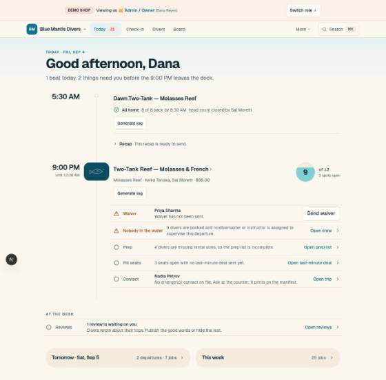

The gap · read from the running app, 2026-09-04
Reef’s tokens landed and the pictures did not: the slices shipped the colours, the radii and the three moments into the compositions that were already there. What follows is the shipped home, storefront, booking page and manifest beside what Reef drew, with the numbers. The pattern is one pattern: the drawing composed a panel per object and the code kept a list.
Shipped · the home at 1280, light, the demo shop

What the drawing had, and the code does not
A panel per station: 28px radius on the warm bed, the site tile leading it at 84×60. Shipped: a three-column grid (112px time, a hairline rail, the body), the tile floating on the rail, no panel at all.
One sentence per row at 15px, a kind word in the row’s tone, one act. Shipped: subject on one line and detail on a second at 14px, and a kind column carrying a sentence (“Nobody in the water”).
No standing control on the page. Shipped: a Generate log secondary button on every station, an owner’s rare act at button weight beside every boat, every morning.
A settled station is the swell and one line. Shipped: a success glyph line, a disclosure row, and the button again — the morning’s finished boat is the busiest block on the page.
The dial at 76px with the count inside it. Shipped: 64px, with “of 12” and the open count as two lines beside it. Close, and the one gap that is a number rather than a shape.
Drawntime 26/700 · title 19/600 · meta 14.5 · row 15 · row height 54 · dial 76
Shippedtime 24/600 · title 18/600 · meta 14 · row 14 · row ~64 (two lines) · dial 64
/s/blue-mantis/trips/… at 390, light
5,782px before the form. The thread ADR decided the form is the page’s terminal word, and it is; what precedes it grew to a route map, ten species with photographs, a moments strip, five site-notes paragraphs and the crew before the diver is offered a seat. Sell then close is right; this is sell, sell, sell, sell, close. The repository’s own rule is that a page that screenshots enormous is telling you the page is unbounded.
Drawn instead (BookingPhone): 2,140px. Three tiles and a “+7 more” door for the field guide, one line for the site, the route and the crew behind one link, two alternates with reasons, then the form. Everything cut is one tap away on the same page, opened in place.
Shipped5,782px · form at 88% of scroll · 10 species · 5 prose blocks
Drawn2,140px · form at 34% · 3 tiles + door · 0 prose blocks above the form
/s/blue-mantis at 1280
Harbor shipped as drawn: the photograph, the shop’s face, the badge wall, the next-boat card, the week as a ledger. Its gap is not composition. Nothing on it changes between 6 AM and 10 PM: a visitor at 9:15 sees the 7:00 boat as a row like any other while it is out on the reef with ten people aboard. The Storefront board gives it the live line (rule 4) and the shop’s own lenses (D02), and moves the next-boat card to say next with space rather than merely next.
Shippednext-boat card at 360px wide, filters as two selects and a checkbox, no state on a departure that has left
Drawna live panel beside the next-with-space card, a lens rail of the shop’s words, “Underway” on the row that is out
/shop/…/manifest at 390, before departure
Below the roll call it is the instrument the ADR asked for — names, circles, the count. Above it, a diver who cannot board is a red paragraph (“1 diver is blocked: still on this manifest, but cannot board until their readiness clears”), the checkpoint dial is an empty circle beside the words, and there is no room for anything the desk did since the crew last looked. The ManifestPhone board keeps every safety rule (no hand, no coral, the circle is the state) and puts two things at the top: the catch-up strip (D42/D27) and the stage strip (D20). The blocked diver is a word on their row, where the tap is.
The slices were sequenced by token (13a) and by moment (13g–13i), and each moment landed inside the composition that existed. Nothing was sequenced by surface. The station was never rebuilt as a panel because no slice was “the station”; the booking page was never bounded because no slice measured it. This canvas’s slice table is by surface, and every row names the pixel it is pinned by: the station is a SectionCard and its test refuses a rail; the booking page’s composition test refuses more than four field-guide tiles above the form; the visual spec captures the home at 6:40 and 6:10 so the band’s clock is photographed.